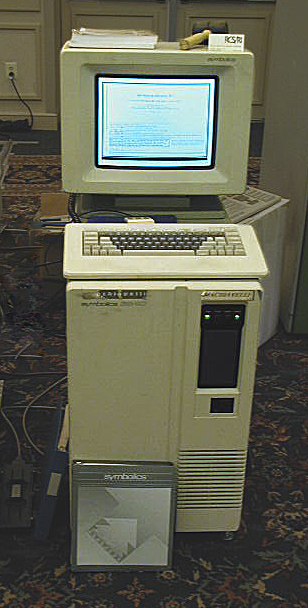
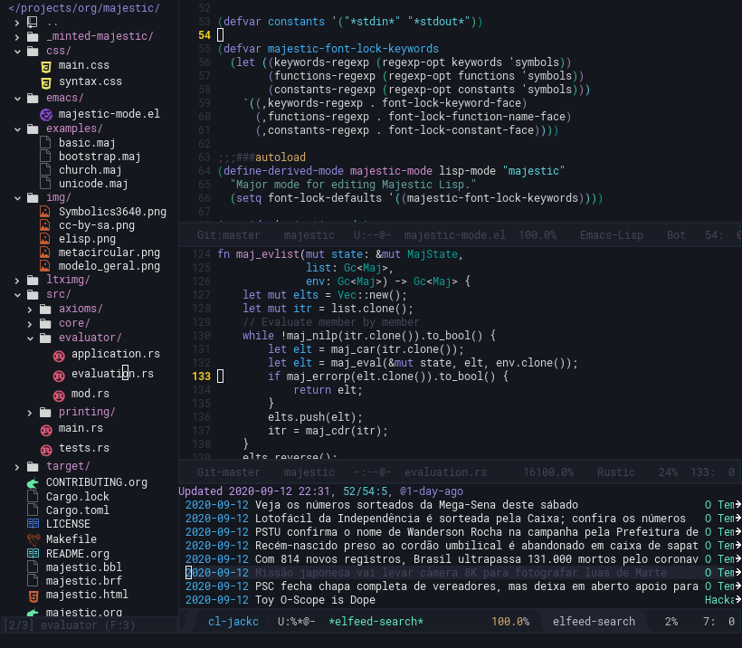

Testando a Exportação
Exportação.
#include <u.h>
#include <libc.h>
void
main()
{
print("Hello, world!\n");
exits(0);
}
Agradecimentos
A linguagem construída nesse livro dá ao leitor a ideia de um software primariamente artesanal, o que leva à crença de que Majestic Lisp seja o "esforço de um homem só". De fato, a maior parte dessa obra foi realizada em momentos solitários e muitas noites e madrugadas de insônia e muito café. Todavia, esta não é toda a história.
Nenhuma obra pode ser concebida apenas com o esforço de uma pessoa. Mais especificamente, seria impossível realizar um esforço tão audacioso quanto um livro que ensina como programar uma linguagem de programação, usando apenas o conhecimento contido em uma mente – que, por definição, é extremamente limitado.
Por esse motivo, gostaria de agradecer a algumas pessoas que me ajudaram ou ajudam ao longo da escrita desse projeto; se fosse possível dizer que uma parte de mim viveria, para a posterioridade, nesta obra, então certamente parte dessas outras pessoas sofreria o mesmo destino.
Obrigado a Paul Graham, criador da linguagem Bel, que serviu de inspiração direta para Majestic Lisp. Se Bel não tivesse sido criada, a possibilidade da criação de Majestic Lisp não teria surgido em primeiro lugar.
Obrigado a Jerônimo Pellegrini, que muito me forneceu recomendações e orientações a respeito da forma como linguagens da família Lisp são programadas. Ainda que não tenha seguido seus conselhos à risca, isso tornou Majestic Lisp uma linguagem melhor.
Obrigado aos meus amigos da comunidade Rust Brasil: Elias, Bruno, Tiago, Renan, e muitos outros mais a quem recorri ao discutir sobre aspectos em especial da linguagem, bem como recorri na necessidade de conselhos sobre implementação desse projeto na linguagem Rust.
Finalmente, sem menos importância, obrigado ao Manoel, ao Edgard; novamente ao Renan e ao Jerônimo, e também aos demais amigos da comunidade Common Lisp Brasil, onde tudo se discute, o que inclui tecnologia em geral e outros dialetos de Lisp. Ali mesmo foi o berçário de Majestic; ali se criou, muito antes da linguagem Bel, o embrião do que seria um Lisp baseado em algumas das minhas opiniões, ainda que muitas vezes infundadas.
Introdução
Programação pode ser considerada um trabalho majoritariamente artesanal. Mas uma consideração como essa não é adotada de forma predominante; longe disso, torna-se algo digno de debate, e deixa uma margem para uma interessante troca de opiniões divergentes. Há aqueles que pensem no ato de escrever um programa de computador como algo mecânico em princípio: existiria um quê de criatividade, já que o programador precisa tomar as melhores decisões do ponto de vista do projeto de software; Mas, para tal, enumera-se ferramentas e processos que o auxiliam com planejamento e que, muitas vezes, acabam apontando, sem auxílio de ``intuição'', o melhor caminho a ser seguido nesse processo criativo.
Apesar de ver a pertinência do uso desses processos (como nos apresenta a disciplina de Engenharia de Software, por exemplo), ainda acredito na programação de computadores como uma arte, algo que envolve muito mais que apenas seguir práticas consolidadas.
<&verna2018> (p. 4) endossa o aspecto artístico na programação – que, por alguns, é considerado mera luxúria –, inclusive citando antigos apoiadores dessas ideias (como Knuth, Dijkstra e Ershov). Esses pensadores ilustres também buscavam clarificar que a descrição de um programa de computador envolve noções intrínsecas de estética, beleza, estilo, prazer e emoção, que tendem a pender muito mais para o lado artístico que o científico.
Penso na escrita de um código de programação como sendo um processo muito similar à boa escrita em prosa de qualquer outro tipo de texto. O objetivo do autor é fazer-se entender através do que escreve; para tanto, é imperativo que palavras, orações e demais expressões gramaticais sejam ordenadas de forma inteligível, e o melhor recurso para garantir que o leitor compreenda o texto escrito é a própria leitura do mesmo, especialmente quando é feita por parte do autor.
Ao escrevermos um programa de computador, realizamos um processo muito similar à composição ou redação. A escrita do código acaba, no fim das contas, por envolver três leitores: o próprio autor, um eventual futuro leitor do código e a máquina em si (leia-se, o compilador ou interpretador, que fica efetivamente responsável por ``compreender'' o código em questão e transformá-lo em linguagem de máquina).
O ``leitor'' mais fácil de agradar neste trio é a máquina, que não reclamará de aspectos como a estética do código, salvo quando programas como linters forçarem um certo estilo de escrita no processo de programação. Porém, a máquina ainda está suscetível a erros gramaticais ou de interpretação, provenientes de deficiências na escrita do código: estes poderão ocasionar tanto erros que antecedem a execução (quando tratarem-se de código sintaticamente inválido), quanto a execução de algo não-pretendido pelo programador (sendo este o caso do erro de semântica).
Aqui entra em ação outro potencial leitor do código: o próprio autor, o programador daquele segmento de código em si. O programador precisa verificar o código por erros, e também precisa criar correções. Se a forma como o código foi escrito não facilita o próprio trabalho daquele que o escreveu, então é sinal de que é necessário revisar a forma como o mesmo foi escrito. Escrever código sem preocupar-se com estética ou beleza é um erro comum de muitos programadores, que costumam ignorá-lo por não representar um problema em curto prazo. Mas, se aquele código precisar ser revisitado após algum tempo, o programador será o primeiro a sofrer com as consequências da ilegibilidade e/ou desorganização do próprio trabalho.
Por fim, temos o último tipo de leitor: o futuro leitor do código, que normalmente seria um terceiro; mas poderíamos pensar até mesmo no programador original, passado um bom tempo desde a última vez que viu o código: aos seus olhos, o programa ter-se-á tornado algo completamente desconhecido… um alienígena.
Precisamos pensar no código como uma ferramenta didática. O código precisa ser dotado de uma simplicidade autoexplicativa. O futuro leitor precisará consertar algo no mesmo ou adicionar uma nova funcionalidade; para tanto, a forma de escrever o código será o melhor guia para deixá-lo a par dos passos a serem tomados, ou dos processos a serem seguidos para adicionar, remover ou modificar certas operações.
No espírito deste aspecto didático do código, que requer certa elegância e senso de beleza, é que escrevo este pequeno software em formato de livro. Escrever o interpretador de uma linguagem de programação e definir a especificação da mesma não é uma tarefa trivial, mas é uma tarefa tangível. Para provar esse argumento e também para encorajar outros programadores a utilizarem-se dessas ideias, detalho passo-a-passo todo o raciocínio por trás do planejamento para que se conceba uma linguagem de programação – como um caso especial, uma linguagem que seja um dialeto de Lisp.
A intenção não é apresentar um produto que seja extremamente polido e que não possa ser modificado posteriormente; antes, o software, assim como qualquer outro texto, é algo vivo, e pode inclusive ser modificado, melhorado ou até mesmo ``traduzido'' para outras linguagens. Por isso, trabalho sob alguns pressupostos, que mais tarde enumerarei, e que segui como regras informais de estilo para esse processo de desenvolvimento.
O que é Lisp?
Antes de mais nada, é essencial ressaltar que a linguagem que construiremos ao longo desse texto é um dialeto de Lisp.
LISP, acrônimo para List Processor (processador de listas), é um formalismo inicialmente definido por
Sendo LISP um processador de listas, há uma pretensão de que o usuário possa usufruir de uma situação inusitada: tanto código quanto dados poderiam ser expressados sob a mesma estrutura, uma lista simplesmente encadeada
Desde o lançamento do LISP 1.5 de McCarthy, a linguagem acabou por tornar-se uma família de linguagens, dotada de diversos dialetos, cada qual com suas idiossincrasias. Mas a maioria deles acabou conservando a característica de expressar diretamente as listas em seus códigos, em uma sintaxe que chamamos de s-expressions. Por isso, dialetos de Lisp normalmente possuem a característica de serem dotados de muitos parênteses na escrita.

Symbolics 3640 Lisp Machine. Fonte: https://en.wikipedia.org/wiki/Lisp_machine. Acesso em 12/09/2020.
Muitos dialetos de Lisp tornaram-se populares ao longo da história, inclusive em máquinas comerciais feitas exclusivamente para execução de Lisps, comumente chamadas de Lisp Machines. Nessas máquinas otimizadas para computação simbólica e processamento de listas, todo o sistema operacional era construído usando-se um dialeto de Lisp. Os sistemas incluíam programas extras como um editor de texto vinculado ao sistema, por exemplo. Através do próprio editor de texto, pode-se realizar alterações com impacto em todo o sistema operacional.

Editor de texto Zmacs, editor do TI Explorer. Fonte: https://alchetron.com/Zmacs. Acesso em 18/09/2020.
Apesar dos mais de 50 anos de idade de LISP 1.5, os dialetos de Lisp não deixaram de ter sua popularidade, ainda que modesta. Há muitos dialetos de Lisp modernos, como podemos verificar a seguir.
O dialeto Common Lisp possui implementações com compiladores nativos, tendo sua performance comparável a linguagens como C e C++. As implementações mais maduras vêm também acompanhadas de um sistema de orientação a objetos poderoso, com despacho de métodos baseado em tipos, e também de um sistema maduro de condições que permite recuperar-se de erros imprevistos manualmente, enquanto o programa é executado.
(defun say-hello (name)
(format t "Hello, ~a!~%" name))
(say-hello "Fulano")
A linguagem Scheme é uma linguagem simples, com uma especificação sucinta. Sendo o carro-chefe dos exemplos explicados em
(define (say-hello name)
(display "Hello, ")
(display name)
(newline))
(say-hello "Fulano")
A linguagem Clojure foi criada por Rich Hickey para ser compatível com a máquina virtual da linguagem Java – a JVM. Atualmente possui grande uso comercial, sendo um dos maiores incentivos para o aprendizado da programação funcional. Sua flexibilidade auxilia inclusive na operabilidade entre programas em Clojure e bibliotecas anteriormente escritas em Java. Possui uma contraparte chamada ClojureScript, que pode ser usada para desenvolvimento web Frontend.
(defn say-hello [name]
(format "Hello, %s!\n" name))
(say-hello "Fulano")
O dialeto Emacs Lisp é utilizado como linguagem de script no editor de texto Emacs. Muito similar a Common Lisp, porém com algumas diferenças bem profundas, permite um nível de modificação extremo no editor de texto homônimo. Isso garante ao editor de texto Emacs a flexibilidade de permitir a construção de extensões poderosas, desde ferramentas avançadas para auxílio na codificação de programas, até a utilização do próprio editor de texto como um gerenciador de janelas do sistema operacional.

Editor de texto Emacs, editando código Emacs Lisp e Rust ao mesmo tempo, enquanto também navega por notícias via feed RSS.
A seguir, introduziremos as ideias principais do dialeto com atual maior relevância para você, que lê este texto: Majestic Lisp.
Majestic Lisp
Majestic Lisp é o dialeto de Lisp implementado nesse livro. A implementação dele é baseada em cinco pontos principais, que definem as decisões de design da linguagem e da implementação:
- Performance não é um objetivo central, ainda que seja bem-vinda. Certamente é conveniente que o interpretador de Majestic Lisp tenha certas otimizações mas, dado que essa obra seja direcionada também para iniciantes em programação, não é necessário que o interpretador tenha uma performance a nível de uma linguagem usada para trabalhos profissionais;
- A implementação busca ser didática ao máximo, e por isso foi feita utilizando literate programming
que aqui é traduzido livremente como programação instruída. Esse paradigma é discutido mais adiante; - A linguagem em si deve ser algo simples, em especial para aqueles que já tenham algum costume com outros dialetos de Lisp (como Scheme, Clojure e Common Lisp) – onde houver mudanças, elas deverão ser inteligíveis ao máximo;
- A obra em si deve mostrar ao leitor que a criação de uma linguagem de programação e de seu interpretador, ainda que não seja uma atividade trivial, está longe de ser uma atividade intangível;
- A linguagem em si foi pensada tanto para uso em computador quanto para uso algébrico, isto é, como uma notação que pode ser escrita à mão, sendo então uma ferramenta para explicar alguns conceitos de computação, quando pertinente.
O primeiro ponto é evidente quando partimos do pressuposto de que o ideal para um programa é não realizar otimização prematura, o que não significa que não possamos usar boas ideias logo no início de um projeto. O software descrito nesse livro é algo acessível, do ponto de vista de um iniciante curioso em programação que já tenha uma certa prática.
A didática é essencial, e também é a causa determinante do segundo e terceiro pontos, também por razões de acessibilidade anteriormente descritas. Isso acaba por culminar na justificativa para o quarto ponto: um programador iniciante pode ficar facilmente intimidado pela ideia da construção da própria linguagem de programação. Todavia, um interpretador de uma linguagem é um programa como qualquer outro.
O quinto ponto vem inspirado diretamente em
Majestic Lisp possui uma sintaxe não muito diferente do que se encontra nos demais Lisps, no sentido de que também é baseada em s-expressions. Mas ela também possui suas próprias idiossincrasias que a difere dos demais dialetos. Posteriormente, observaremos adequadamente esses detalhes.
Design do Interpretador
O interpretador de Majestic Lisp segue vagamente os moldes determinados por
Definimos este tipo de interpretador para uma linguagem de programação como sendo circular, por apresentar uma recursão mútua entre dois procedimentos principais: eval e apply. O uso do sufixo meta na denominação diz respeito à natureza metalinguística do mesmo: definimos o interpretador da linguagem em questão, usando a própria linguagem que se quer interpretar. Em

Esse tipo de abstração é extremamente poderosa, porque nos permite observar apenas o cerne do interpretador de uma linguagem de programação, sem demais considerações. Por exemplo, aqui assumimos que a expressão a ser interpretada já esteja em um formato que possa ser consumido pelo interpretador. Um programa de computador, normalmente, precisa ser digitado em um arquivo-texto, e esse arquivo então deverá ser processado para ser consumido pelo cerne do interpretador.
Para um interpretador metacircular de um dialeto de Lisp, esse processo é ignorável: pode-se tirar vantagem da própria estrutura da linguagem, que já realiza essa transformação. Assim, o programador só precisa preocupar-se com as implementações dos procedimentos eval e apply, as funções principais na descrição de um interpretador nesse modelo.
O interpretador de Majestic Lisp aqui descrito foi construido usando a linguagem de programação Rust. Sua descrição, portanto, não possui a característica de ser metalinguística, mas isso não significa que abandonaremos o modelo da circularidade mútua entre eval e apply. Ao invés disso, lidaremos com mais alguns passos extras, como a transormação de um arquivo-texto em uma estrutura que possa ser interpretada.

A Figura 17 descreve um esquema geral da arquitetura do interpretador de Majestic Lisp. Esse interpretador consiste de três módulos principais, além de um componente global trabalhando para a execução do interpretador.
O componente global de Majestic Lisp constitui-se, grosso modo, de duas partes importantes: o núcleo e o estado global.
O núcleo estipula certos axiomas e funções primitivas da linguagem, de forma que esses elementos e valores estejam disponíveis ao ambiente assim que o mesmo se inicia – o código em si poderá ser executado de forma subsequente.
O estado global encerra certas coleções vitais para a execução de um programa, podendo inclusive serem mutáveis. Essas coleções são:
- Tabela de Símbolos: Um programa Lisp é composto principalmente por listas de símbolos, uma vez que Lisps são linguagens para computação simbólica. A tabela de símbolos é responsável por manter referências de símbolos, permitindo que sejam reutilizados ao longo do programa.
- Contexto Global: Em Majestic Lisp, trata-se de uma tabela que associa certos símbolos a valores específicos. Esse contexto é visível em todas as partes do programa, sendo esta a sua principal diferença com relação a um contexto léxico, que será melhor explorado em outro local.
- Tabela de Streams: Categoriza e gerencia streams abertos, que são estruturas muito similares a descritores de arquivo p. 445. Em Majestic Lisp, os streams são responsáveis por toda a comunicação de entrada (por exemplo, fornecer o código ao Leitor) e saída (redirecionar o que será escrito na Tela ou em um arquivo). Streams são estruturas opacas que dependem de detalhes do sistema em que o programa do interpretador é executado.
Resta agora enumerar os módulos principais do sistema. Eles são:
- Impressão: Módulo responsável por formatar expressões em texto nativo, de forma que possam ser mostradas em formato humanamente legível. Como a impressão envolve percorrer e verificar símbolos, precisa ter acesso à tabela de símbolos do estado global;
- Leitor: Módulo responsável por tomar uma certa entrada em formato de texto nativo e transformá-lo em uma estrutura que possa ser processada pelo interpretador, normalmente conhecida como árvore sintática abstrata (AST). Como a leitura é um processo de transformação de símbolos em texto nativo para símbolos no ambiente Lisp, precisa ler e modificar a tabela de símbolos do estado global;
- Interpretador: O módulo mais importante do programa, sendo responsável pelo processo de interpretação de uma expressão em formato de AST
Em um Lisp como Majestic Lisp, as árvores sintáticas abstratas são representadas usando listas simplesmente ligadas. Segundo
Isso introduz dois pontos de relevância: primeiramente, como Lisps são linguagens feitas para a manipulação de listas simplesmente ligadas, podemos representar internamente nossos programas usando o próprio framework da linguagem1. Isso significa que não será preciso implementar uma estrutura que sirva apenas para representar uma AST.
Segundo, como a AST pode ser representada diretamente em uma lista, isso significa que nossos programas poderiam ser manipulados através da própria linguagem. Esse é um conceito crucial de uma linguagem como Lisp, ainda que não seja exclusivo aos Lisps; a ele, damos o nome de homoiconicidade.
Podemos tirar muito proveito desse conceito; o leitor atento já terá percebido que podemos criar listas, durante a execução de um programa, que constituam também outros programas Lisp válidos.
Footnotes
1 A melhor forma para compreendermos essa ideia é lembrando-nos de que, em algum ponto, precisamos de algo como uma ``matéria-prima'' para representarmos as listas em Majestic Lisp. Se tivermos uma forma simples de representação de listas simplesmente ligadas, então basta que, durante o processo de conversão do programa, criemos listas cujos elementos sejam símbolos ou outras sub-listas. Esse processo será melhor discutido mais tarde.
Sobre Programação Instruída
Para garantir a reproducibilidade do projeto, optei aqui por utilizar o conceito de literate programming, como demonstrado por
Este interpretador foi inteiramente escrito utilizando o formato de texto Org, no editor de texto Emacs. De acordo com o website do Org1, trata-se de ``um formato para realizar anotações, manter listas de tarefas a serem feitas, planejar projetos, e criar documentos com um sistema de texto-plano rápido e efetivo''. A prosa é escrita ao longo do arquivo, e são inseridos blocos de código que foram configurados para serem escritos em seus respectivos e apropriados arquivos posteriormente.
O código possui estrutura e organização que podem não seguir fielmente o conteúdo deste texto. Sendo assim, tal código é exportado posteriormente, através de um processo conhecido como entrelaçamento (tangling). Ao utilizar este método, espero manter uma aplicação onde o entendimento do que está sendo escrito venha antes do código em si, de forma que o leitor possa timar e analisar partes do código com base na prosa que as acompanha.
Footnotes
Como ler este documento
Como citado anteriormente, este documento funciona de forma dupla, constituindo-se de duas partes: primeiro, uma prosa com blocos de código nela inseridos; segundo, o entrelaçamento dos blocos de código em seus respectivos arquivos, o que compõe o texto do código do interpretador de Majestic Lisp.
A linguagem utilizada na construção do interpretador é a linguagem Rust1, uma linguagem construída para programação de sistemas. Usufruiremos dos recursos de Rust para construir o interpretador, mas o livro não é um tutorial dessa linguagem; dito isso, os blocos de código em Rust foram construídos com cuidado para que possam ser o quanto mais acessíveis for possível para leigos nessa linguagem.
Blocos de implementação de métodos em Rust (iniciados pela palavra-chave impl) foram divididos em certas partes, de forma que pode haver redundância em sua declaração. Isso foi feito para que cada método possa ser estudado e descrito separadamente, onde esse procedimento for pertinente.
No caso dos exemplos envolvendo código em Majestic Lisp, algumas vezes precisaremos simular entrada e saída de comandos em uma estrutura chamada REPL. O REPL (acrônimo para read, eval, print, loop) nada mais é que a ideia de um console interativo, onde o usuário digitará uma entrada, e em seguida o resultado do processamento dessa entrada será impresso logo abaixo.
Seguiremos um formato de descrição do REPL onde a entrada do usuário é precedida por um caractere >. O resultado da operação virá logo abaixo, sem um recuo. Em entradas multilinha da parte do usuário, estas respeitarão o recuo produzido pelo caractere >.
> entrada do usuário
resultado
> entrada do usuário
com múltiplas linhas
resultado